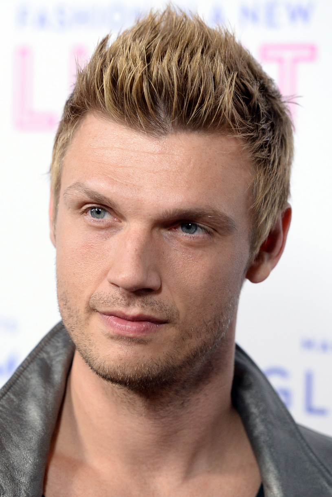

Nick Carter
Nickolas Gene Carter (ur. 28 stycznia 1980 w Jamestown) – amerykański muzyk i wokalista muzyki pop, jeden z członków zespołu Backstreet Boys, aktor, tancerz, producent muzyczny, autor, reżyser, scenarzysta i model.
Urodził się w Jamestown, w stanie Nowy Jork jako syn Jane Elizabeth Schneck (z domu Spaulding) i Roberta Eugene'a Cartera (1952-2017). Ma angielsko-niemiecko-irlandzko-walijskie pochodzenie ze strony matki i żydowskie ze strony ojca. Ma szóstkę rodzeństwa: dwie siostry – Leslie Barbarę (ur. 6 czerwca 1986, zm. 31 stycznia 2012) i Robertę 'Bobbie Jean' BJ (ur. 12 stycznia 1982) oraz bliźnięta: brata Aarona i siostrę Angel (ur. 7 grudnia 1987), a także przyrodnią siostrę Ginger (ur. 1972) z pierwszego małżeństwa ojca i przyrodniego brata Kadena Brenta (ur. 2005) z nowego małżeństwa ojca. Kilka lat później rodzina przeniosła się do Ruskin. W 2003 jego rodzice rozwiedli się. Jego ojciec ożenił się z Ginger R. Elrod.
Carter rozpoczął swoją karierę w młodym wieku, kiedy jego matka zapisała go na lekcje głosu i lekcje tańca w balecie w Karl and DiMarco's School of Theatre and Dance, gdy miał 10 lat. Występował w kilku reklamach. W czwartej klasie w Miles Elementary School zagrał w spektaklu Upiór w operze. Zrobił także film edukacyjny Reach For The Book, program The Klub i przez dwa lata grał w Tampa Bay Buccaneers. Pojawił się też na kinowym ekranie w filmie fantasy Tima Burtona Edward Nożycoręki (Edward Scissorhands, 1990) u boku Johnny'ego Deppa i Winony Ryder jako dziecko grając na slajdzie Slip 'N Slide. W wieku 11 lat znalazł się w Mickey Mouse Club.
Jedna z jego nauczycielek tańca, Sandy, umieściła go w swojej pierwszej grupie o nazwie Nick and an Angels. W latach 1989-1993 Carter nakręcił wiele popularnych piosenek innych artystów, w tym „Breaking Up Is Hard to Do” z repertuaru Neila Sedaki i „Uptown Girl” oraz kilka oryginalnych piosenek, które wykonywał na imprezach. Te nagrania znalazły się w nieoficjalnej wersji zatytułowanej Before the Backstreet Boys 1989–1993 przez Dynamic Discs, Inc wydanej w październiku 2002. Okazało się, że Nick podczas kilku przesłuchań poznał AJ McLeana i Howiego Dorough, z którymi się zaprzyjaźnił.
Mając trzynaście lat stał się jednym z pięciu wokalistów boysbandu Backstreet Boys.
W 2002 ukazała się jego solowa płyta Now Or Never.
Uznany za głównego promotora i przyczynę popularności Paris Hilton. To poprzez związek z Carterem (od stycznia do lipca 2004) Hilton po raz pierwszy została zaprezentowana szerszej publiczności[5]. Od 2008 związał się z Lauren Kitt, którą poślubił 12 kwietnia 2014[5]. Mają syna Odina Reigna (ur. 19 kwietnia 2016)[6] i córkę Saoirse Reign (ur. 2 października 2019).